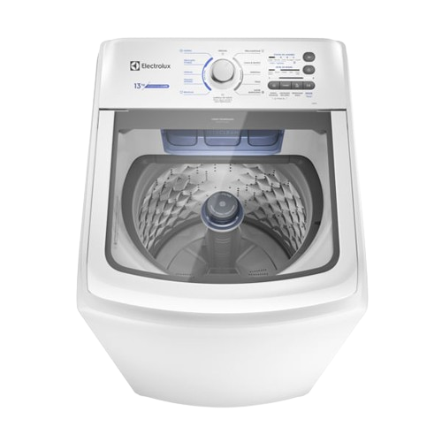
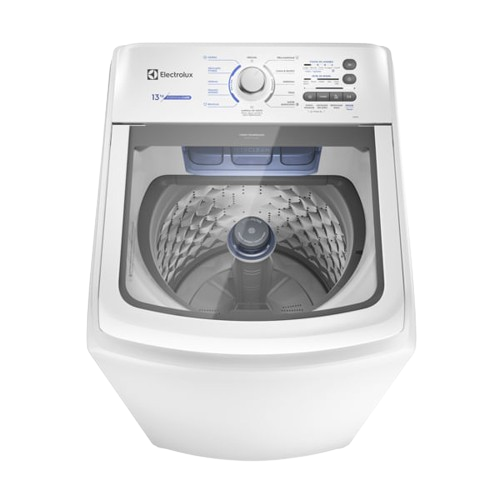

Lavadora de Roupas Eletrolux 15kg Cesto Inox - 12 Programas de Lavagem Branca BWK13
À vista: R$1.799,99
em até 12x
Informações do Produto
A Máquina de Lavar 15kg Electrolux Essential Care com Cesto Inox , Dispenser Jet&Clean e Ultra Filter (LED15) foi projetada especialmente para facilitar sua rotina diária. Nossas roupas nos acompanham diariamente, além de mostrar um pouco sobre nossa personalidade. Sendo assim, merecem todo o cuidado que a linha Essential Care oferece. A lavadora de roupas Essential Care 15kg possuí dispenser auto limpante com exclusiva tecnologia Jet&Clean , que mantém o dispenser limpo para o próximo ciclo de lavagem graças aos fortes jatos de água, que diluem até 100%1 do sabão e do amaciante no momento correto do ciclo de lavagem e, ao entrar em contato com a roupa, se espalham de maneira eficiente evitando manchas e relavagens, e promovendo maior cuidado aos tecidos. Com o novo Ultra Filter Pega Fiapos da LED15 que possui capacidade de retenção 8 vezes2 maior, não há necessidade de se preocupar com os fiapos e sujeiras que ficam presos nas roupas, após o ciclo de lavagem. O sistema de lavagem Ciclos Rápidos otimiza automaticamente o tempo dos programas, deixa-os mais rápidos quando necessário e mantém a mesma performance, oferecendo cuidados com o menor desgaste das roupas. O Cesto inox incorpora a sua máquina de lavar roupas LED15 um design mais sofisticado, e proporciona alta performance na lavagem, que combinado com a função de auto limpeza de cesto, evita que resíduos de outras lavagens fiquem acumulados na parte interna. Além de tudo, a lavadora Essential Care Electrolux possibilita o reuso e a economia da água por permitir o reaproveitamento da mesma para outros fins, como lavar o chão, devido a sua Função Reutilização de água . Descubra um novo jeito de cuidar das suas roupas de forma econômica e sustentável com a Máquina de Lavar 15kg da Electrolux LED15.